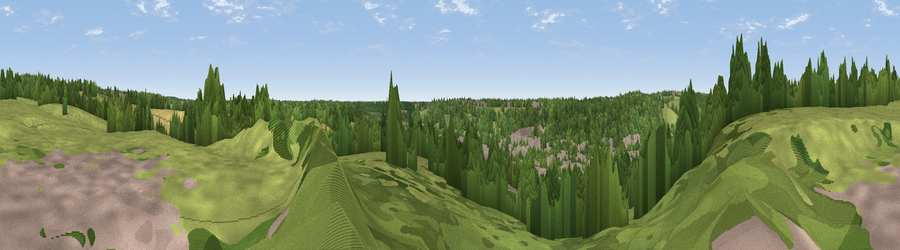

Viewpoint near Loudwater
#39657 in England · top 56% of its area beats it · near LoudwaterThe view, rendered

A 360° render of this exact spot computed from the terrain model, tree cover and land cover — summer colours, afternoon light, calibrated against photographs of famous viewpoints. Real trees, hedges and buildings will differ in detail.
The panorama
Grey silhouette: terrain skyline in each direction (720 bearings, Earth curvature and refraction included). Dashed green: skyline with trees (+15 m) and buildings (+8 m) as obstacles. Blue strip: how far the ground is visible on each bearing.
Where the view opens
Wedge length = distance to the farthest visible ground on that bearing (vegetation-aware). Rings at 10, 25 and 50 km.
What fills the view
42% woodland · 31% grassland · 18% built-up · 9% cropland
Angular shares of the visible panorama (visual magnitude), not map area. Landscape diversity 0.55 (0–1 Shannon).
Key numbers
More beautiful places nearby
The staircase of upgrades: each row has a higher view potential than everything closer. Driving times are estimates from straight-line distance, calibrated against real road routing — check an actual route before setting out.
| Place | Direction | Drive | Score |
|---|---|---|---|
| Viewpoint near Loudwater | N · 1 km | ~2 min | 47.5 |
| Viewpoint near Downley | NW · 8 km | ~15 min | 49.2 |
| Fultness Wood Hill | SW · 8 km | ~16 min | 57.8 |
| Viewpoint near Whiteleaf | NW · 15 km | ~26 min | 58.2 |
| Brush Hill | NNW · 15 km | ~27 min | 67.9 |
| Viewpoint near Whiteleaf | NNW · 15 km | ~27 min | 70.1 |
| Beacon Hill | NNW · 16 km | ~29 min | 72.7 |
| Coombe Hill Monument | NNW · 17 km | ~29 min | 75.5 |
51.61213, -0.69332 · source: screening · position refined by local search. Computed location — check access rights before visiting.